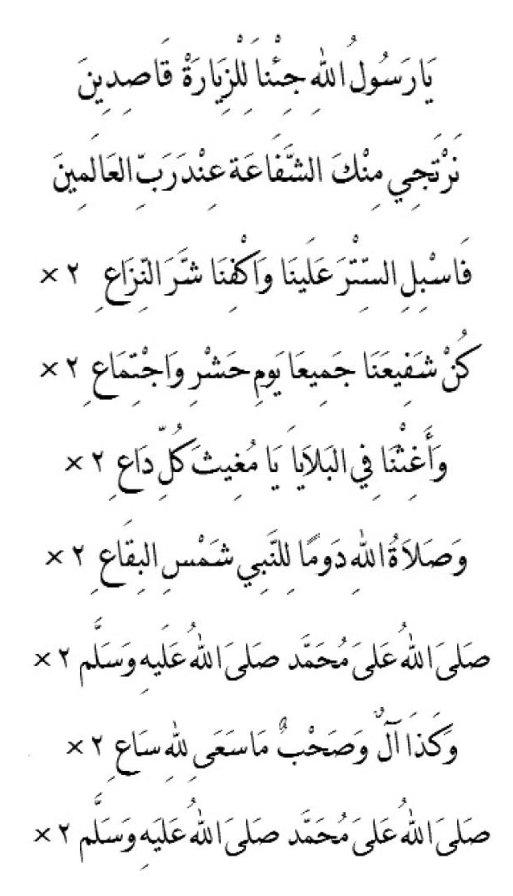

Let's tell the story of our Prophet. The Messenger of Allah, the savior of mankind, in this world and the hereafter.
Even though we have told it many times before, perhaps we can tell it from perspectives that haven't been shared yet.
Or if it's told again, that's fine too. So that those who have forgotten are reminded once more. The memory of it grows stronger.
Prophet Muhammad (peace be upon him) was an extraordinary person, incomparable. Before or after him, no one among humans was like him.
Even among the Prophets and Messengers that were sent. He was an angel in spirit, yet human in body.
He was the wisest and purest of souls among mankind before and after him. Thus, God gave him the title 'Fatanah'.
In fact, he was the most 'Fatanah' (wise) among all His messengers. His knowledge was not derived from his intellect,
even though he was the sharpest among humans. He received knowledge directly from God, which was placed into his heart.
This is called revelation. He learned directly from God. That is why he did not need to write or read like an ordinary person.
Because of that, he never forgot his knowledge. If it came from intellect, he might have forgotten.
His knowledge covered both this world and the hereafter.
His reliance on God was extraordinary. That is why, at night, he would not store food for the next day,
instead, giving it to those in need. He was confident that if he lived the next day, God would provide for him.
He would not kill, even though at certain times he had to. But he always chose forgiveness.
That is why many embraced Islam at his hands. His bravery was unmatched, as he would walk past his enemies alone,
and they would not harm him. In fact, they were left puzzled.
His compassion was evident, especially towards the poor, orphans, and widows. He forgave those who wronged him,
even without them asking for it. Once, a slave was about to be punished by his master, and the Prophet offered
to take the punishment on the slave’s behalf, making the master so ashamed that he freed the slave.
The Prophet often bought slaves and then freed them. His generosity was boundless, like a fast wind.
No one could match him. He never disappointed those who asked for help, even if it meant temporarily going into debt.
If anyone spoke ill of him, he remained silent. He never laughed out loud but smiled gently.
Even when angry, he concealed it so well that others wouldn’t notice. He never revealed anyone’s flaws,
not even his enemies'. The Prophet ate little, just enough to sustain him. He never ate alone, even when hungry.
He would always share with at least one other person. He also never insulted food he did not like.
If he disliked something, he simply wouldn’t eat it.
His patience was remarkable. No matter the trials God placed upon him, he accepted them willingly.
That is why God gave him the title 'Ulul Azmi,' an honorific reserved for the highest ranking of the prophets.
He was the leader of the 'Ulul Azmi.' Under his leadership, exceptional students emerged,
known as his companions. Their numbers exceeded a hundred thousand, and all of them were granted Paradise,
as their sins were forgiven due to their closeness to him. His companions were like stars in the sky,
while the Prophet was the full moon.
His heart never slept, even when his eyes did. This showed that his heart was always alert,
and because of this, his ablution (wudu) would not break when he slept. He respected people according to their rank,
even if they were non-Muslims. Sometimes, he would spread his own shawl for guests to sit on as a sign of respect.
The Prophet never cursed any of God’s creations, not even animals. He never committed sins,
nor did he act contrary to what was best. When he saw a woman, he would lower his gaze.
He was the most modest, even more than the most bashful virgin. He never saw his own private parts,
nor those of his wives. When he walked, he would not allow women to pass in front of him.
His devotion in worship was immense, especially during the night, to the point that his feet swelled from standing.
He served his wives and family willingly, not because they asked him to, but out of his own volition to please God.
He was the best of husbands, setting an example that no one else could match.
He even served his enemies. One touching story is about a blind man who hated him.
The Prophet would serve him without the blind man knowing who he was. When the Prophet passed away,
Abu Bakr took over serving the man, but the blind man noticed a difference and asked, "Who are you?"
Abu Bakr replied, "I am Abu Bakr, taking the place of the Prophet who used to serve you, but he has passed away."
The blind man was shocked, realizing that the one who had been serving him all this time was the man he hated.
The shock caused him to die, but he embraced Islam before his death by reciting the Shahada.
When he passed away, it was as if the entire universe was grieving. Even stones cried. But his teachings remain,
and will never die. The Prophet is not just a man; he is God’s light, illuminating the world. We are still living
off that light today. Every one of us has been touched by it, whether we realize it or not.
May we continue to be enlightened by the light of the Prophet until we meet him in the hereafter.
When the Prophet made friends, he prioritized his companions. He would even serve his companions.
Everyone who interacted with him was satisfied. Everyone felt respected by him, regardless of their rank.
Let’s continue telling the story of our Prophet, in more detail. He was an extraordinary human, beloved by his Lord.
He would not eat unless he was hungry, and he would stop eating before he was full, unlike ordinary people.
He did not like meals with many dishes. Whatever he loved was for the sake of his Lord, and even when he was angry,
it was for his Lord, not for personal reasons.
When he passed away, he left behind almost no wealth. The Prophet never missed congregational prayer,
except once in his life, during the illness that led to his death. His food and drink were never his concern,
yet he always had sustenance. However, he instructed his followers to work, especially those with families.
He never accepted payment for his work, nor did he ask for it, unlike many scholars today who seek payment
for preaching and teaching, even though their efforts should follow the Prophet’s example.
His fear of God was evident on his face. He married a wealthy widow, Khadijah, and she gave him all her wealth,
which the Prophet then sacrificed. In friendship, he was the best of friends. At home, he was the best father.
As a husband, he was the best. And as a leader, he was the best leader.
When the Prophet spoke, his voice was firm, and his words were like pearls, deeply touching those who heard them.
When he delivered a speech, no one would laugh, as the words would cause deep reflection. Unlike today's scholars,
whose speeches often lead to laughter, as they speak from their tongues, not their hearts. The Prophet's words were
brief, but filled with knowledge. He would speak concisely, unlike most people, and his words encompassed deep wisdom.
In the hadith, it's said his speech was 'jawamiul kalim,' short but profound. His words were brief, but their meaning
was vast, satisfying, and touched the soul. Unlike others who speak at length but with little substance, wasting time
without leaving an impact. Let’s continue the story of our Prophet. He did not waste time wandering aimlessly, nor
would he engage in idle talk, even if it was not sinful.
When the Prophet laughed, it was silent. His fear of God was evident on his face. He shared in his companions' joy,
and in their sadness, he would also express sorrow. The Prophet would easily weep out of fear of God, despite knowing
God loved him. His character was exalted; God Himself praised him, declaring him the most pious among all people,
before and after.
It was as if the Prophet did not hear what God said about him. God said: "His character is truly great." No one could
compare to him. Yet, the Prophet never felt proud, always feeling like a servant to God. He maintained his humility
and his sense of servitude always remained in his heart. Although God praised him, he continued to feel as a servant
to his Lord. His humility was always evident in his life.
He wore a robe and a turban. His favorite colors were white and green, though he sometimes wore other colors.
The food he liked most was milk and dates, with meat as his dish, which gave him strength. This is a brief account
of our Prophet's story. Whatever hasn’t been mentioned, strive to learn it.
Many miracles occurred through him, both seen and unseen. His greatest miracles are the Quran and Hadith, which
will endure until the end of time as guidance for humanity. These few details should suffice for those with little
time to study them.
Stand for the Marhaban

If someone’s character mirrors that of our Prophet, they can become a model for others. If they lead, God blesses them,
for they are the leader promised by God to mankind. But in these end times, many who speak of the Prophet forget
themselves. They praise the Prophet, but their own character is not praiseworthy. Thus, their words have no effect,
because their actions don’t reflect the Prophet's teachings. Even their families don’t respect them. And so it is.